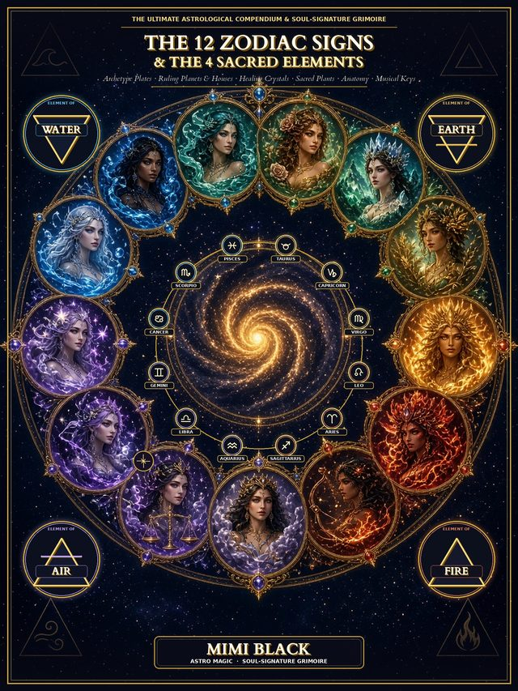
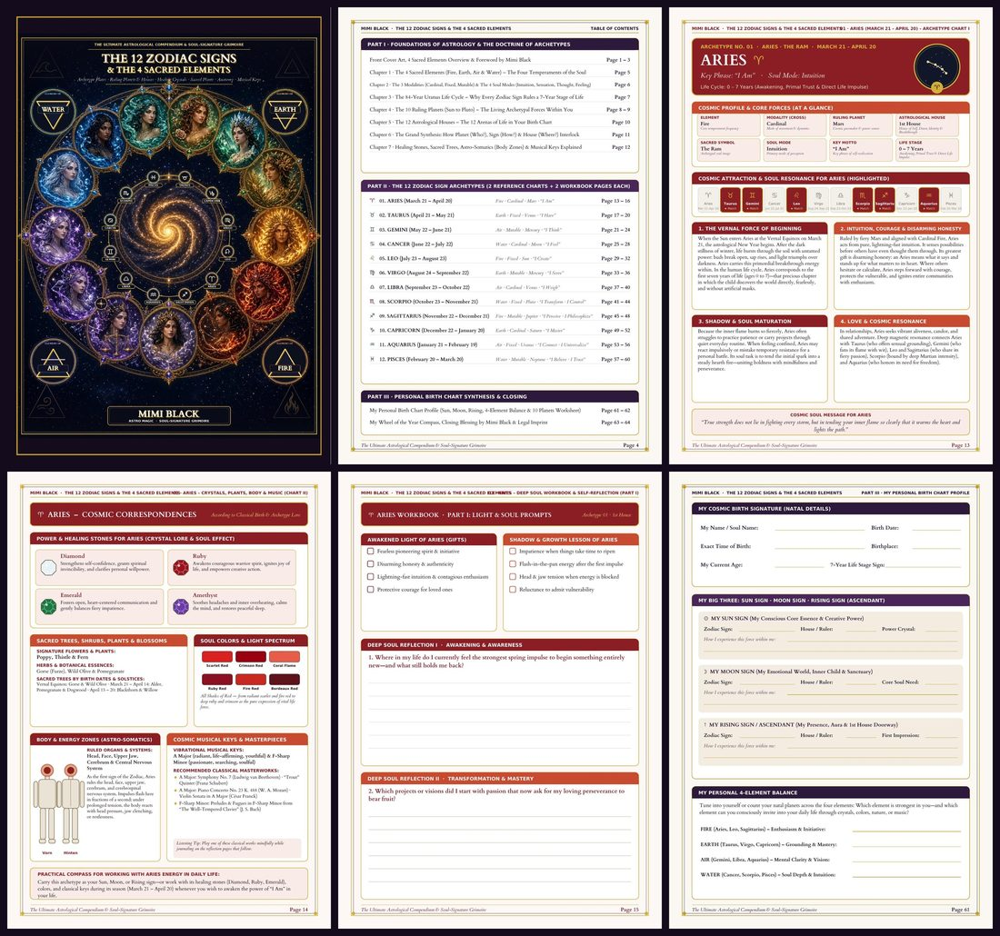

THE 12 ZODIAC SIGNS
& THE 4 SACRED ELEMENTS
The Ultimate Astrological Compendium & Soul-Signature Grimoire: archetype charts for all 12 signs, the 4 elements, planets and houses, healing crystals, sacred trees, body zones and classical musical keys – plus a deep self-discovery workbook. 64 illustrated A4 pages by Mimi Black.
Secure checkout via Digistore24 · Digital product (PDF download) – no physical item will be shipped · 60-day money-back guarantee
The secret language of your soul signature – in one richly illustrated compendium
This 64-page English compendium and workbook brings the whole architecture of Western astrology together in one place: the 4 Sacred Elements (Fire, Earth, Air & Water), the 3 Modalities, the 10 Ruling Planets, the 12 Astrological Houses – and all 12 zodiac sign archetypes, each on four full A4 pages: two reference charts plus two deep self-reflection workbook pages.
For every sign you will find its cosmic profile at a glance, its healing stones, sacred trees and plants, soul colors, body zones (astro-somatics) and classical musical keys with recommended masterworks – followed by reflection prompts, a small ritual with stone, sound and body, and a personal soul affirmation.

Part I · Foundations of astrology (pages 1–12)
The 4 Sacred Elements
Fire, Earth, Air and Water as the four temperaments of the soul – what nourishes each element and why certain people understand each other instantly.
3 Modalities & 4 Soul Modes
Cardinal, Fixed and Mutable – how cosmic energy moves – plus the soul modes Intuition, Sensation, Thought and Feeling.
The 84-year Uranus life cycle
Why every zodiac sign rules a 7-year stage of life, from Aries (0–7 years) to Pisces (77–84 years).
The 10 Ruling Planets
From Sun to Pluto: the five personal planets and the five social and transpersonal planets as the living forces within you.
The 12 Astrological Houses
The 12 arenas of life in your birth chart – and why your Ascendant marks the cusp of your 1st House.
The Golden Formula & the Law of Resonance
Planet (Who?), Sign (How?) and House (Where?) in one vivid formula – plus why healing stones, sacred trees, body zones and musical keys belong together (“As above, so below”).
Part II · The 12 zodiac sign archetypes (pages 13–60)
Each sign gets four pages: Archetype Chart I (cosmic profile, attraction & resonance, gifts, shadow and soul message), Chart II – Cosmic Correspondences (crystals, plants & trees, soul colors, body zones, musical keys), and a two-part Deep Soul Workbook (light & shadow, four reflection prompts, a ritual, a resonance check and your soul affirmation).
| ♈ Aries | March 21 – April 20 · Fire · Cardinal · Mars · “I Am” · pages 13–16 |
|---|---|
| ♉ Taurus | April 21 – May 21 · Earth · Fixed · Venus · “I Have” · pages 17–20 |
| ♊ Gemini | May 22 – June 21 · Air · Mutable · Mercury · “I Think” · pages 21–24 |
| ♋ Cancer | June 22 – July 22 · Water · Cardinal · Moon · “I Feel” · pages 25–28 |
| ♌ Leo | July 23 – August 23 · Fire · Fixed · Sun · “I Create” · pages 29–32 |
| ♍ Virgo | August 24 – September 22 · Earth · Mutable · Mercury · “I Serve” · pages 33–36 |
| ♎ Libra | September 23 – October 22 · Air · Cardinal · Venus · “I Weigh” · pages 37–40 |
| ♏ Scorpio | October 23 – November 21 · Water · Fixed · Pluto · “I Transform · I Control” · pages 41–44 |
| ♐ Sagittarius | November 22 – December 21 · Fire · Mutable · Jupiter · “I Perceive · I Philosophize” · pages 45–48 |
| ♑ Capricorn | December 22 – January 20 · Earth · Cardinal · Saturn · “I Master” · pages 49–52 |
| ♒ Aquarius | January 21 – February 19 · Air · Fixed · Uranus · “I Connect · I Universalize” · pages 53–56 |
| ♓ Pisces | February 20 – March 20 · Water · Mutable · Neptune · “I Believe · I Trust” · pages 57–60 |
Part III · Your personal birth chart synthesis (pages 61–64)
- Page 61: My Personal Birth Chart Profile – natal details, your “Big Three” (Sun, Moon and Rising sign) and your personal 4-element balance
- Page 62: My Planets & Houses at a glance – an interactive worksheet for all 10 planets of your birth chart
- Page 63: My Wheel of the Year Compass through the four seasonal gateways, plus a closing blessing
- Page 64: Imprint, copyright and important health disclaimer
Return to it on your birthday, at the turning of the seasons, or whenever you wish to understand yourself or a loved one more deeply. Print the workbook pages at home or fill them in on your tablet. No prior knowledge of astrology needed.
Product details at a glance
| Title | THE 12 ZODIAC SIGNS & THE 4 SACRED ELEMENTS – The Ultimate Astrological Compendium & Soul-Signature Grimoire (64-Page Compendium and Workbook, English Edition) |
|---|---|
| Author / brand | Mimi Black (Astro Magic) |
| Language | English |
| Format | PDF download (digital product), DIN A4, printable or for use on tablet/computer |
| Scope | 64 pages (Part I: foundations · Part II: 12 zodiac archetypes with 4 pages each · Part III: personal birth chart worksheets) |
| Delivery | Download link sent by Digistore24 via email immediately after payment |
| Price | €14.90 incl. VAT (one-time payment) |
After your purchase, Digistore24 sends you an email with your personal download link.
🔒 60-day money-back guarantee & secure checkout via Digistore24
Your order is covered by a 60-day money-back guarantee through our payment provider Digistore24 GmbH (St.-Godehard-Straße 32, 31139 Hildesheim, Germany). Immediately after your purchase you will receive your download link by email and can download your PDF straight away.